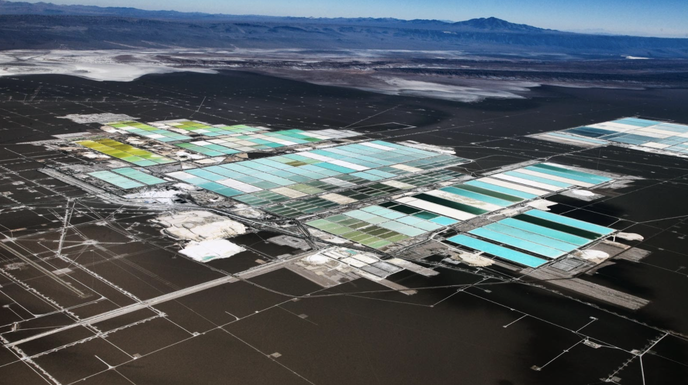
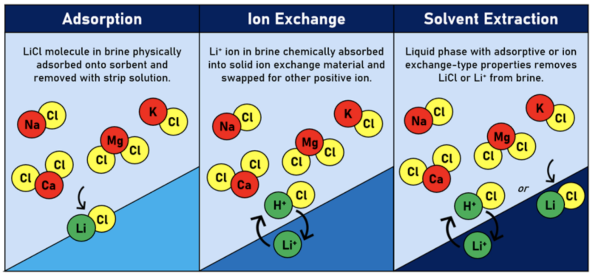

Next generation mining for lithium and other clean energy metals
As the world transitions to clean energy and electric transportation, the global demand for metals used in these technologies will surge. Lithium, for example, is used in the large majority of battery chemistries where weight and size are an issue. Lithium demand is expected to grow by a factor of 40 between 2020 and 2040 as electric vehicles and their batteries become mainstream and lithium ion battery prices drop.
Our partner Gaetano Crupi said in our blog post about who controls lithium:
“Of the top six countries with the most lithium reserves, 72% of those collective reserves are in South America. Even when measuring existing mining reserves, South America has more than 50% in Chile and Argentina alone. In general, the South America region (Chile, Brazil, Peru, Argentina, and Bolivia) has a key strategic advantage in not just lithium but copper, iron ore, silver, aluminum, nickel, manganese, and zinc — many of the metals needed for key clean energy technologies (batteries, electronics, wind turbines).”
These lithium reserves, particularly in South America, are in the form of brines, ultra-salty underground water deposits that are rich with valuable minerals we need for clean energy technologies. To extract lithium and other minerals from these brines, miners use massive, water-hungry, landscape-scarring evaporation ponds. This process is slow, expensive, environmentally destructive, often displaces indigenous peoples.
Evaporation pond: Image courtesy of Argonne National Laboratory
The slow and expensive process of producing this lithium means that the world is headed for a lithium shortfall, where demand far exceeds supply. To address these problems, the world will increasingly turn to new technologies that enable Direct Lithium Extraction (DLE). DLE technologies use a chemical process to extract lithium from brine, rapidly and in a very small footprint, and pump the remaining water back into the underground brine aquifer.
Three types of direct lithium extraction. Source: NREL
DLE technologies, such as those from Lilac Solutions, EnergyX, or Summit Nanotech, have the potential to reduce the process from years to days, reduce the cost of lithium production, extract more lithium from the same reserves, massively reduce the land footprint and environmental challenges of lithium production, and make more lithium available, at a lower cost, to power our continued electrification and clean energy revolution.